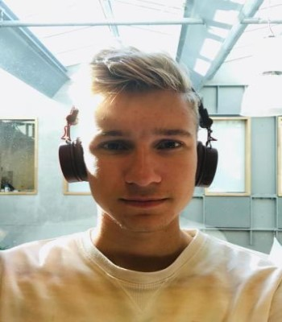
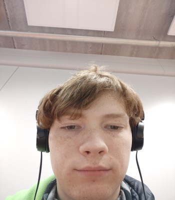
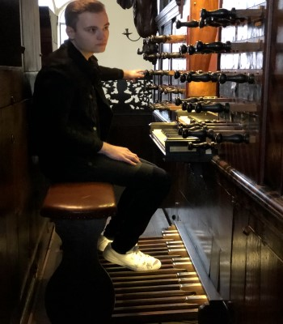

Koen Meindertsma
Ik ben Koen Meindertsma, 16 jaar en doe op dit moment de Applicatie-Ontwikkelaar opleiding aan het alfa college.
Mijn hobby's zijn: Creatief bezig zijn, Gamen en Longboarden.
Ik heb hiervoor gekozen doordat mijn interesse hier ligt en ik hoop later dan ook dit groter in het vak te kunnen uitwerken.
 Julian Engels
Julian Engels
Ik ben Julian engels, ben 19 jaar en ik woon in Hardenberg
Ik doe de opleiding Applicatie ontwikkelaar Niveau 4 op het Alfa-college in Hardenberg
ik hou van muziek gaming geography geschiedenis. Ik speel zelf drum en ik doe aan zang.

Ian Meppelink
Ik ben Ian Meppelink, ben 18 jaar en ik woon in Hardenberg.
Ik doe de opleiding applicatieontwikkelaar niveau 4 op het Alfa College hardenberg.
Ik hou van anime en gaming. Ik doe zelf ook nog aan cosplay.

Nick ten Caat
Ik ben Nick ten Caat, ben 20 jaar en woon in Coevorden. Ik ben nu bezig met de opleiding ICT-Beheer.
Deze combineer ik met de opleiding Applicatieontwikkelaar. Deze studies doe ik op het Alfa-College in Hardenberg.
Mijn hobby's zijn vooral muziek maken en muziek luisteren. IK speel namelijk orgel en piano wat ik zeer graag met passie doe.